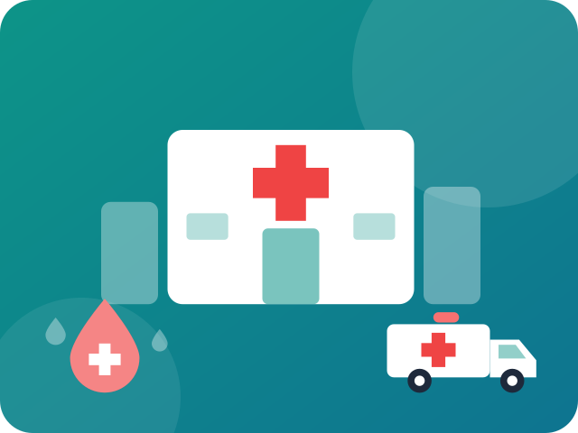

🏥 Hospital management, simplified
One suite to run every ward, counter and queue.
Issue tokens, dispense medicines, track blood units, report lab results and dispatch ambulances, all from one fast dashboard that works on any device, even offline.
- ✓ No sign-up
- ✓ Works offline
- ✓ Light & dark mode

8integrated modules
24/7emergency call logging
0installs or accounts needed
1dashboard for the whole team
Everything a hospital desk needs
Eight connected modules that share one live view of the hospital.
Up and running in three steps
1Open the dashboardNo installation. It runs in any modern browser.
2Pick a moduleUse the sidebar to jump to queue, pharmacy, blood bank and more.
3Act and trackEvery action updates the overview and alert panel instantly.
In an emergency, call 112
India’s unified emergency number. Hospital staff can log and dispatch ambulance requests by priority in SmartCare.